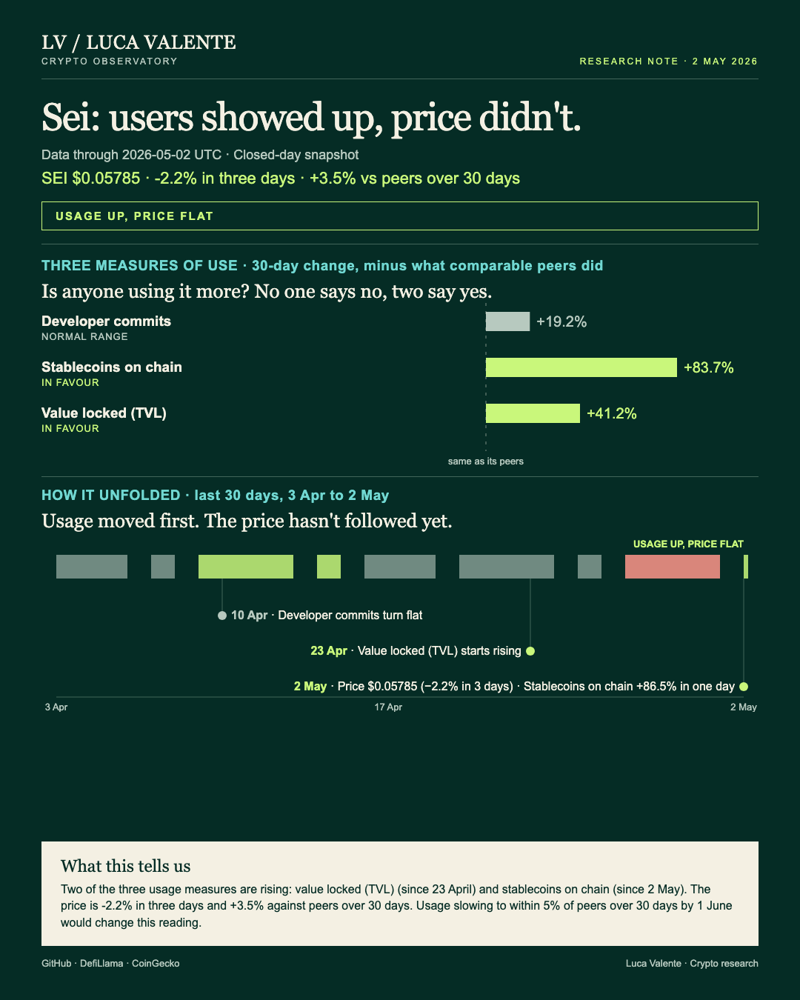
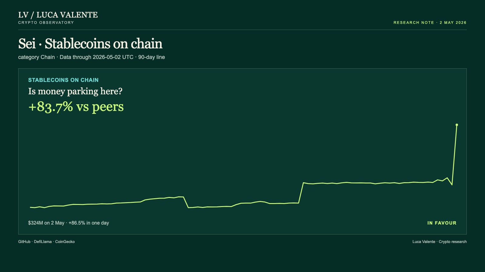

Training note, written on 22 September 2026 from data as of 2 May 2026. Not part of the published series.
$324 Million, a 90-Day High for Sei's Stablecoins

Money is flooding onto Sei's stablecoins while its price stays still. That gap matters because usage moving before price is exactly the kind of shift a reader who only watches the token would miss.
Sei is a blockchain in its own right, not built on top of another network, with its own token, SEI. It is not an exchange either, which is why trading volume does not apply here. SEI also trades as a listed perpetual future on Binance, one more place besides the spot market where a price gets set for it.

By 2 May, stablecoins on Sei stood at $324 million, up 86.5% from the day before. That is the highest level in ninety days of data. It is also the chart worth putting in front of a reader today: no other day in this window, including Sei's own stablecoin history, moved this much. The next-biggest step in the same series came on 31 March, a jump from about $128 million to $179 million, roughly 40%, less than half of what happened on 2 May. Over the past month stablecoins on the chain are up 83.8%, or 83.7% net of the rest of its group. The jump landed on a Saturday.
Value locked, the money users have parked in Sei's applications, stood at $61 million on 2 May. That is up 43.9% over thirty days, or 41.2% net of the group, a bigger thirty-day rise than this series usually makes. It has been climbing since 23 April, up from a low of $40 million on 7 April. That low was itself well under the $118 million peak this same series reached on 3 February. This is a recovery from a hole, not a fresh high. The size of the climb is why the 41.2%-above-peers figure is worth taking at face value, not written off as the rest of the group simply falling faster.
Code commits are flatter. Sei logged 33 commits in the week of 26 April, down 2.7% over thirty days. The net-of-group figure reads +19.2%, but only because the rest of the chains fell harder over the same stretch, not because Sei's own pace picked up. The weekly count peaked at 41 in the week of 29 March, bottomed at 17 in the week of 12 April, and landed at 33 last. Fees add little here: about $194 a day, too small to read as a signal either way.
Price has stayed in a narrow band this week, between $0.05729 on 1 May and $0.06239 on 27 April. Against that band, and against the group, up 3.5% net of it over thirty days, flat is the right word. Against the past ninety days the picture is different. SEI traded at $0.05785 on 2 May, down 2.2% over three days, and well under half the $0.1366 high it reached on 17 February.
Moves this large in stablecoins do not always hold. Since September 2025, jumps like this one have shown up 101 times across 31 other chains. Sei itself has had two, so the outcome counts that follow include Sei's own moves too: 103 cases at the one-week mark, 99 at the one-month mark. A week later, the level held at or above the day of the move in 57 of those 103 cases, close to even odds. A month later it held in only 46 of 99. Sei's own two jumps, on 28 January and 31 March, both still held a month on, up close to a fifth and up 6.9%. Two data points are not enough to lean on by themselves. But value locked on Sei had already started climbing nine days before this stablecoin jump, from 23 April. The spike did not arrive with nothing behind it. That is why I do not treat those odds on their own as reason enough to set the stablecoin number aside.
By 1 June, one of two things will be true. Either value locked, stablecoins and commits, each measured net of the group over thirty days, are all still comfortably ahead of the other chains, or at least one of them has slipped to within five points of the group. The second road is the one that would change this reading; the first leaves it standing. None of the three is close to that line today. Commits, the smallest of the three at +19.2 points above the group, sit closest to it, but still far from it.
My read: the stablecoin jump is the number that moved most. It did not arrive on its own; value locked was already rising before it. Commits are the one measure closest to flat and the one I would watch hardest between now and 1 June. The number that earns its place on today's chart is the $324 million sitting on Sei, next to a price that did not follow it there.
Sources: DefiLlama for stablecoins, value locked and fees; CoinGecko for price; GitHub for developer commits.
Peer group: 36 chains tracked by DefiLlama. 'Net of the group' is the 30-day change minus the group's median.
Not financial advice. This is a research note based on public on-chain data.